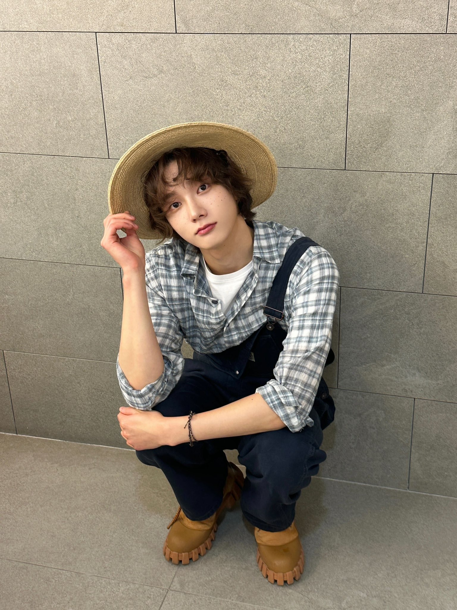

About Our Site
What We Do
Granny made this website to guide all her dearies through the oftentimes treacherous journey of Stardew Valley! Granny and her team hope to help everyone who needs a hand in playing the game - whether it's your first time or if you've already come a long way!
Meet Our Team
Granny couldn't do all of this alone. Here is everyone who helped make Granny's Guide!

Georgia Graninni
- Founder and creator of Granny's Guide
- With 800 hours of playtime to her name, Georgia hopes to continue to spread the joy of Stardew Valley.
- When not updating her Stardew Valley Guide, Georgia is always working to perfect her brownie recipe.

Sungho Park
- Editor of Granny's Guide
- As an avid watcher of Stardew Valley YouTube content, Sungho edits the content published on Granny's Guide.
- In his downtime, he works in the mini garden in his balcony, hoping to have a piece of farmland for himself one day.
Shrek
- Coder of Granny's Guide
- Shrek is an up-and-coming UI/UX designer. He took up Granny's Guide to work on as a way to destress.
- Shrek has played Stardew Valley once in his lifetime. His total playtime is 50 hours.
- Traumatized and injured (carpal tunnel) from his one and only playthrough, Shrek retired from the game. He is now a big advocate of ergonomic mouses, hoping that no one else goes through the pain he went through.